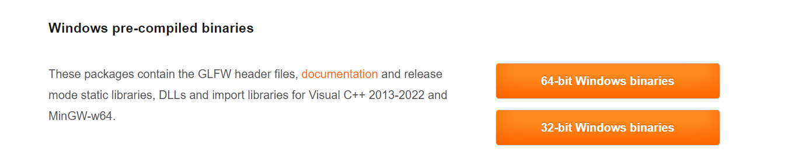
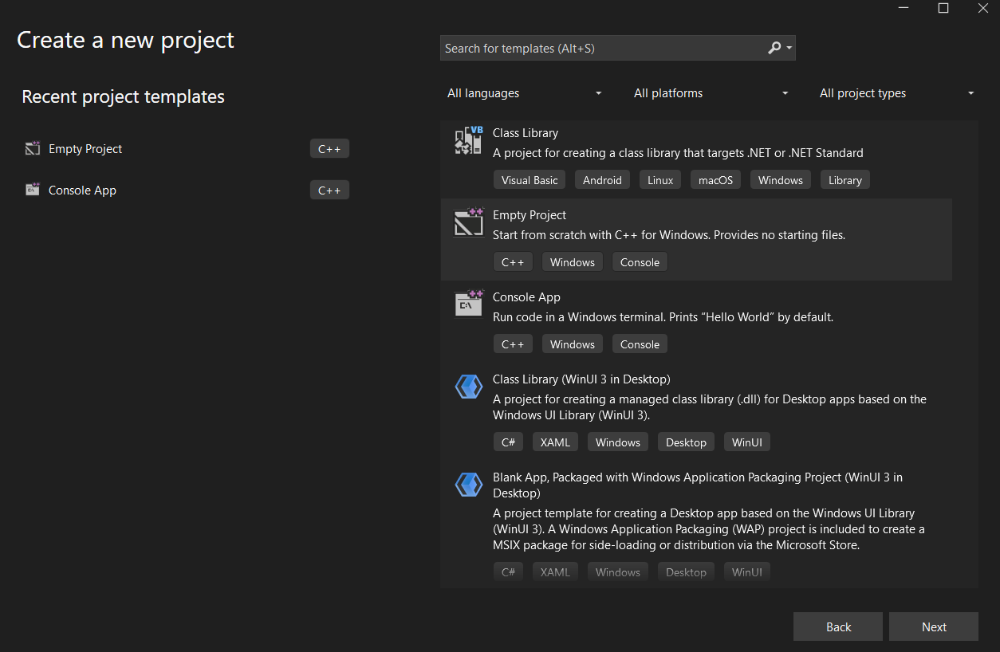
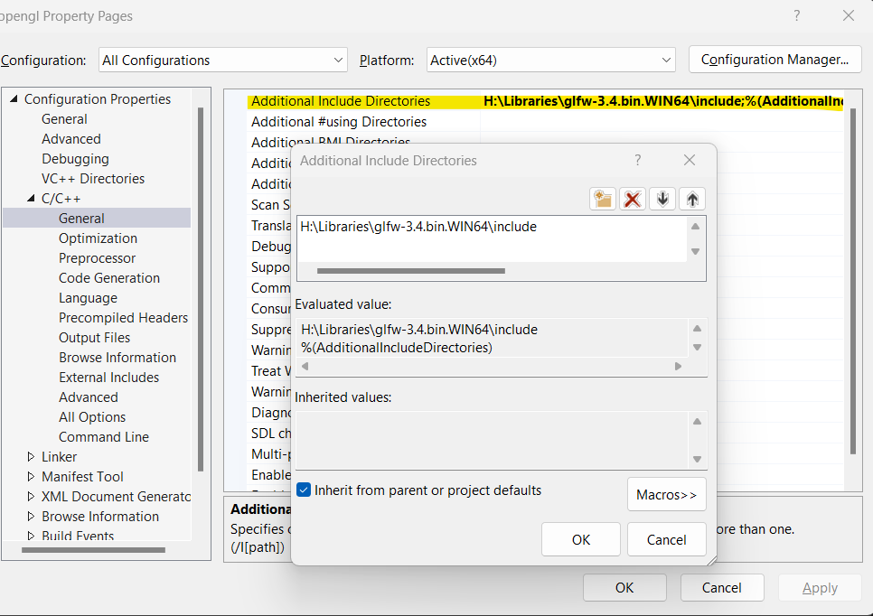
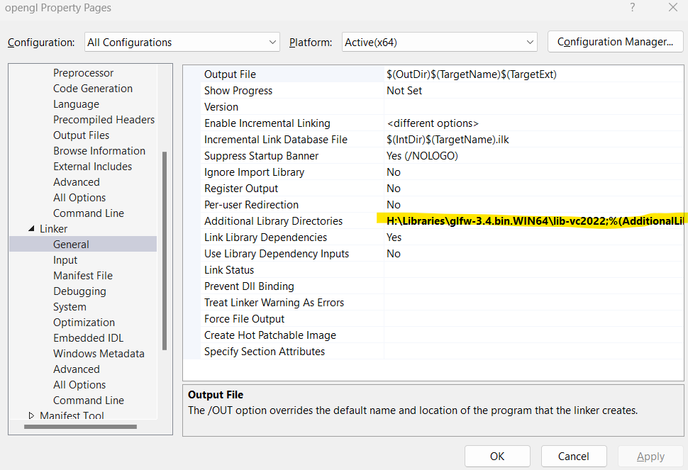
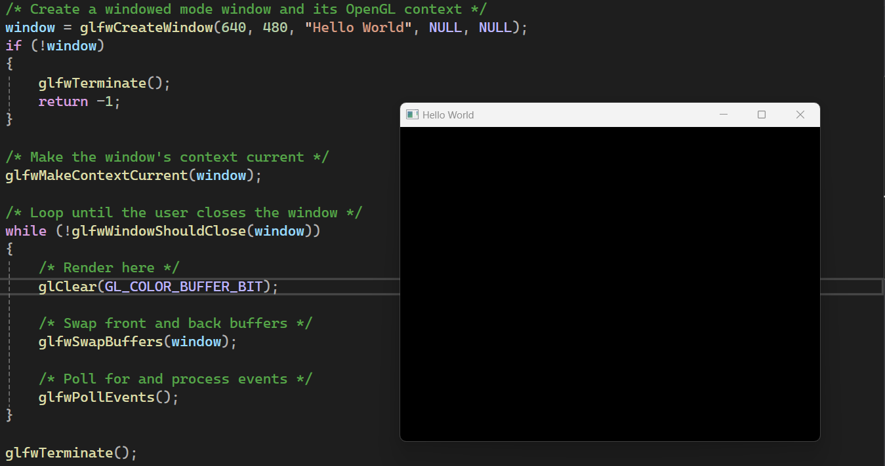

OpenGL
OpenGL (Open Graphics Library) is a cross-platform and cross-language Application Programming Interface (API) for rendering graphics on the computer system. It covers a wide range of dimensions from 2D to 3D. In this tutorial, we will dissect the process of setting up OpenGL in Windows (Visual Studio 2022).
GLFW
GLFW is an open-source, multi-platform library for OpenGL, OpenGL ES, and Vulkan development on the desktop. It provides a simple API for creating windows, contexts, and surfaces, receiving input and events. We need GLFW to create a window and OpenGL context to render graphics. GLFW is a C library that can be used in C++ programs. First, download the GLFW library from the official website: GLFW.
Extract the zip file into a folder of your choice.
Setting Up OpenGL in Visual Studio
Create an empty project in Visual Studio:
After this, if you try to write some OpenGL code, the IDE will throw an error because it doesn't recognize GLFW. We need to add directories for the IDE to understand this code.
First, add the include directory of GLFW in the project properties. Go to Project → Properties → C/C++ → General → Additional Include Directories and add the path to the include directory of GLFW.
Next, add the library directory of GLFW in the project properties. Go to Project → Properties → Linker → General → Additional Library Directories and add the path to the lib directory of GLFW.
Finally, add the library files of GLFW in the project properties. Go to Project → Properties → Linker → Input → Additional Dependencies and add the following libraries:
- glfw3.lib
- opengl32.lib
- gdi32.lib
- user32.lib
- kernel32.lib
- shell32.lib
Check if the Code Runs
Now, copy this code and check if it runs. This is a simple code for creating a window with a "Hello World" title:
#include <GLFW/glfw3.h>
int main(void)
{
GLFWwindow* window;
/* Initialize the library */
if (!glfwInit())
return -1;
/* Create a windowed mode window and its OpenGL context */
window = glfwCreateWindow(640, 480, "Hello World", NULL, NULL);
if (!window)
{
glfwTerminate();
return -1;
}
/* Make the window's context current */
glfwMakeContextCurrent(window);
/* Loop until the user closes the window */
while (!glfwWindowShouldClose(window))
{
/* Render here */
glClear(GL_COLOR_BUFFER_BIT);
/* Swap front and back buffers */
glfwSwapBuffers(window);
/* Poll for and process events */
glfwPollEvents();
}
glfwTerminate();
return 0;
}
After building, you will see the following popup:
Congrats! You are all set and ready to go!